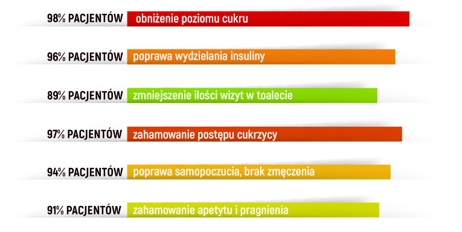

Statystyki dotyczące cukrzycy są szokujące. Około 17% osób w Polsce zmagasię z tą chorobą, a według WHO każdego roku na świecie umiera na nią aż 2 miliony ludzi.Niestety tylko w niektórych klinikach diabetycy mogąotrzymać wykwalifikowaną pomoc. Dzisiajmamy okazję porozmawiać z Jackiem Kulikowskim, dyrektorem Instytutu Diabetologii z Centrum Naukowego Ministerstwa Zdrowia.
- Cześć Jacku. I od razu pierwsze pytanie - czy statystyki WHO są prawidłowe?
- Niestety, muszę powiedzieć, że tak - te dane są poprawne. Być może jest tam błąd statystyczny,ale z pewnością każdego roku na cukrzycę umiera ok. 2 milionów ludzi na całym świecie. Wedługszacunkowych danych od 30 do 40 tysięcy osób umiera co roku na cukrzycę w samej Polsce. Wprzypadku braku właściwego wsparcia dla organizmu ukrzyca prowadzi do różnego rodzajupowikłań,stopniowo niszcząc ludzkie ciało. Mogą to być problemy z pracą narządów wewnętrznychoraz liczneniedomagania związane z cukrzycą. Na przykład gangrena cukrzycowa, nefropatia, retinopatia,owrzodzenia troficzne, hipoglikemia, kwasica ketonowa. Cukrzyca może również prowadzić dorozwoju guzów nowotworowych. Tak czy inaczej, wynik we wszystkich przypadkach jest taki sam -pacjenci zmagają się z bolesną chorobą, stają się niepełnosprawnymi albo umierają. W ten sposóbkończy każdego roku ponad 30 tysięcy cukrzyków w Polsce. Należy zrozumieć, że zachorowania niezależą od wieku. Cukrzyca może wystąpić z jednakowym prawdopodobieństwem u 24-letniego lub45-letniego pacjenta. Można więc powiedzieć, że prędzej czy później cukrzyca "złapie"wszystkich.
- Co możemy zrobić w takiej sytuacji?
- Niestety nie mamy żadnego specjalistycznego programu do walki z cukrzycą. Teraz nawet wklinikach nie zawsze jest możliwe znalezienie odpowiedniego specjalisty. Nie wspominając już oznalezieniu naprawdę wykwalifikowanego endokrynologa lub diabetologa, który zapewni Ci wysokiejjakości pomoc. W większości przypadków lekarze nawet nie próbują przeprowadzać szczegółowychanaliz, poprostu przepisują pacjentom insulinę i tyle. W rezultacie ludzie zostają skazani na śmierć.
Oczywiście Instytutu Diabetologii z Centrum Naukowego Ministerstwa Zdrowia próbuje pomóccukrzykom. Trzeba jednak zrozumieć, że jesteśmy odrębną instytucją i mamy zaledwie kilkaplacówek w kraju. W ostatnim czasie udało nam się dokonać przełomu w ramach projektu StopDiabetes, który moim zdaniem zmieni sytuację diabetyków we wszystkich krajach na lepsze.
- Czym dokładnie jest przełom?
- Oficjalnie uzyskaliśmy dostęp do pierwszego środka stworzonego w ramach tego międzynarodowegoprogramu - kapsułek . Faktem jest, że możliwości produkcji są ograniczone, a wPolsce ten produkt nie był wcześniej sprzedawany. Cały dostępny zapas produktu kupiła Europa,Chinyi USA. Teraz podpisaliśmy dokumenty, dzięki którym nasi specjaliści dołączyli do głównegozespołu badawczego. To otworzyło nam drogę, aby dostawy produktu, szybko i sprawnie mogłydocierać do Polski.
- Czy to prawda, że całkowicie niszczy chorobę i jej objawy wciągu kilku dni od pierwszego użycia?
- Podpisaliśmy dokumenty dotyczące połączenia naszych zespołów badawczych w celu opracowaniadrugiej generacji kapsułek zwalczających cukrzycę. Dzięki temu dostawy będą mogły docierać doPolski. Jeżeli mówimy o działaniu, to jest środkiem dwufazowym, który zapewniawejście całego kompleksu substancji czynnych do krwi. Dzięki temu ponownie uruchamia układhormonalny i odpornościowy organizmu, działając jako rodzaj katalizatora. W rezultacieorganizm zaczynasamodzielnie wytwarzać insulinę. U 93% osób, już po miesiącu używania kapsułek, insulinajestwytwarzana przez organizm bez nich. Następnie musisz tylko kontrolować sytuację, a jedynie wnajgroźniejszych przypadkach powtórzyć kurację. Tak więc kapsułki przywracają cukrzyków dozdrowia. Wcześniej było to nie do pomyślenia. W tej chwili jest unikalnymproduktem,który może pomóc cukrzykom. Wszystkie inne dostępne środki nie są już tak skuteczne.
Proszę tylko spojrzeć na ten wykres. Tak właśnie wygląda powrót do zdrowia cukrzyków stosujących .
Niemcy odgrywają wiodącą rolę w finansowaniu projektu Stop Diabetes. Muszę powiedzieć, że ichspecjaliści z powodu ogromnych zastrzyków finansowych poczynili ogromne postępy w tejdziedzinie. Niemieccy naukowcy wnieśli ogromny wkład w tworzenie produktów związanych zzapobieganiem cukrzycy, takich jak .
- Czy jest już dostępny w Polsce?
- Tak, po dołączeniu do projektu uzyskaliśmy dostęp do regularnych zapasów środka na cukrzycę.Zapotrzebowanie na nie jest ogromne, a wielkość produkcji jest wciąż niewielka, dlatego jest dostarczany tylko do tych krajów, które uczestniczą w opracowywaniu tychproduktów. Oprócz tego, że zapewniliśmy jego dostawy, Ministerstwo Zdrowia wprowadziłospecjalny program, który refunduje aż 50% kosztów. Oznacza to, że diabetycy w Polsce mogągo kupić znacznie taniej niż w Europie i Ameryce.
- A gdzie można dokonać zakupów?
- Ponieważ otrzymujemy niezbyt duże ilości, obecnie środek dostępny jest tylko na oficjalnej stronieinternetowej projektu. Próbowaliśmy negocjować z sieciami aptek, ale wszystkie oneodmawiają sprzedaży po naszej zalecanej cenie (apteki chcą zarabiać jak najwięcej, a myzalecamy im sprzedaż po kosztach). Dlatego postanowiono zorganizować sprzedaż online, abyzapewnić jak największej liczbie osób dostęp do środka. W tej chwili każdy w potrzebie możezłożyć zamówienie i kupić do użytku osobistego. Dostawa odbywa się zapośrednictwem poczty lub kuriera (płatność po otrzymaniu i weryfikacji paczki), wniosek niewymaga pomocy z zewnątrz.
- Jacku, dziękuję Ci za ciekawą rozmowę. Czy chciałbyś powiedzieć coś naszymczytelnikom, zanim się pożegnamy?
- Chciałbym powiedzieć, że „tonący brzytwy się chwyta”. Cukrzyca może w dowolnym momencie wywołaćśmiertelne procesy w organizmie - od zgorzeli po zmiany nowotworowe. To tak, jakby żyć iwiedzieć, że gdzieś nad Tobą zawsze jest dryfująca gilotyna, która w każdej chwili może spaść iodciąć ci głowę. Według naszych statystyk diabetycy żyją średnio o 23 lata mniej niż ludziezdrowi. pozwala pozbyć się choroby i dodać te 23 lata do ich życia.
Jeżeli nie możesz znaleźć wykwalifikowanego diabetologa, nie masz pieniędzy nakosztowne leczenie, a chcesz po prostu pozbyć się cukrzycy - zastosuj .
- Zrobiliśmy wszystko, co w naszej mocy, aby dostarczyć środek do Polski. Niestety nie możemy gorozdać wszystkim potrzebującym, chociaż udaje nam się sprzedawać go po kosztach. Teraz wszystkozależy od Ciebie!
Aby zamówić z 50% zniżką, wystarczy, że klikniesz w poniższy link.
na FacebookuDodajkomentarz